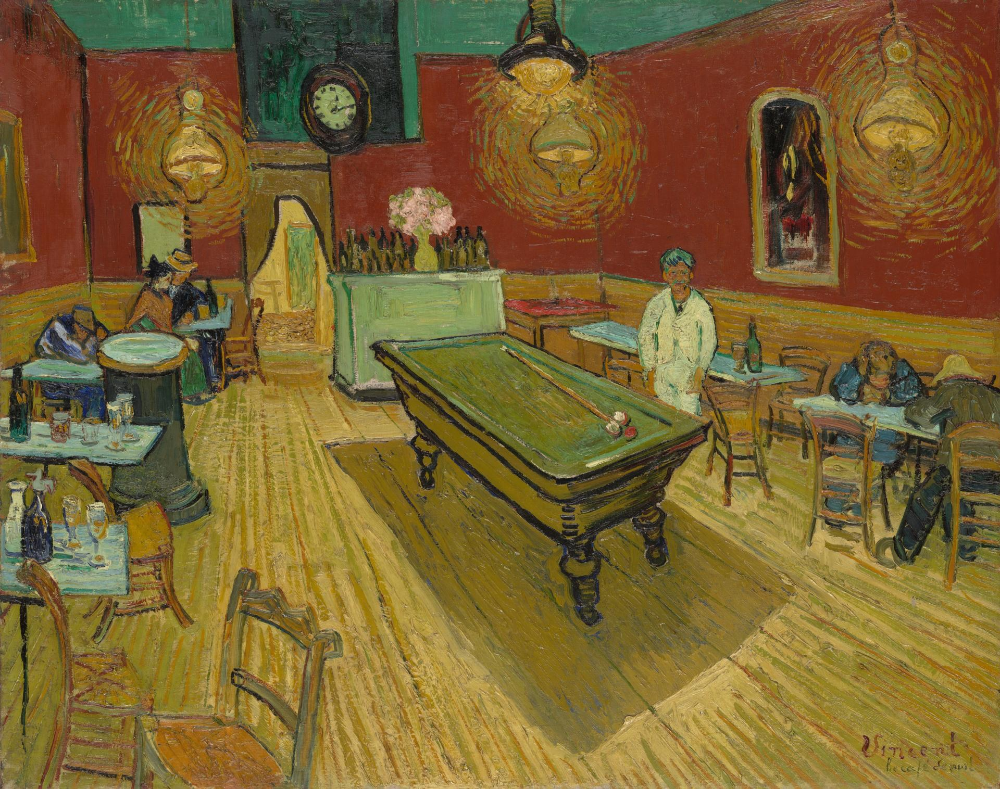

夜间咖啡馆 The Night Café
夜间咖啡馆 / The Night Café · 梵高 / Vincent van Gogh · 1888年9月 / September 1888 · 耶鲁大学美术馆 / Yale University Art Gallery
图片：Wikimedia Commons，公有领域 / Image: Wikimedia Commons, public domain

发现 · Discover
煤气灯 Gas lamps
梵高在信里写，他要在晚上、在煤气灯下画这间咖啡馆。
Van Gogh wrote that he would paint the café in the evening, by gas light.
红与绿 Red and green
红墙和绿天花板不是写实，而是他特意选的颜色，用来表现人类"可怕的激情"。
The red walls and green ceiling are not realistic. He chose them to express the "terrible passions of humanity".
台球桌 Billiard table
房间正中央是一张台球桌，旁边投下长长的影子。
A billiard table stands in the middle of the room, casting a long shadow.
趴着的客人 Slumped figures
角落里的客人趴在桌上。这是一家通宵营业的咖啡馆，没钱住旅馆的人会来这里过夜。
Customers slump over the tables. This café stayed open all night, and people with nowhere to sleep came here.
站着的人 The standing man
画中站着的那位，据说就是咖啡馆的老板。
The standing figure is said to be the café's owner.
三个通宵 Three nights
梵高连续三个晚上通宵作画，白天睡觉。
Van Gogh stayed up for three nights in a row to paint this, sleeping during the day.
故事 · The story
ACT I 第一幕 · 三个通宵 Three nights
1888年9月初，梵高在拉马丁广场的这家通宵咖啡馆里，连续三个晚上作画，白天睡觉。
In early September 1888, Van Gogh painted for three nights in a row in this all-night café on Place Lamartine, sleeping by day.
1888年9月 · 耶鲁大学美术馆 / September 1888 · Yale University Art Gallery
ACT II 第二幕 · 一个危险的地方 A dangerous place
他在信里说，想用这幅画表达：咖啡馆是一个可能让人毁掉自己、发疯或犯罪的地方。
He wrote that he wanted to show the café as a place where one can ruin oneself, go mad or commit a crime.
ACT III 第三幕 · 远行 A long journey
这幅画后来到了俄罗斯，属于收藏家莫罗佐夫，1918年被收归国有。之后它辗转来到美国，留给了耶鲁大学。2014年，法院裁定它继续留在耶鲁。
The painting later went to Russia, to the collector Morozov, and was nationalised in 1918. It then made its way to America and was left to Yale. In 2014, a court ruled it would stay there.
一个通宵的房间，走了很远的路。 A room that stayed up all night, and travelled far.
作品档案 · Artwork record
| 画家（生卒年） · Artist (dates) | 文森特·梵高（1853–1890） / Vincent van Gogh (1853–1890) |
|---|---|
| 画名 · Title | 夜间咖啡馆 / The Night Café (Le Café de nuit) |
| 年份 · Date | 1888年9月，阿尔勒 / September 1888, Arles |
| 材质 · Medium | 布面油画 / Oil on canvas |
| 尺寸 · Dimensions | 72.4 × 92.1 cm |
| 收藏地 · Collection | 耶鲁大学美术馆，美国纽黑文 / Yale University Art Gallery, New Haven |
| 来源说明 · Credit line | Bequest of Stephen Carlton Clark, B.A. 1903 |
关于画家 · About the artist
文森特·梵高（1853–1890），荷兰画家。他将近27岁才开始画画，短短十年留下了大量作品。1888年他来到法国南部的阿尔勒，在那里画出了许多最著名的画。
Vincent van Gogh (1853–1890) was a Dutch painter. He began painting at around 27 and left a huge body of work in just ten years. In 1888 he moved to Arles in the south of France, where he painted many of his best-known works.
更多梵高的画 · More by Vincent van Gogh